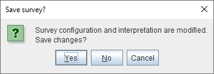
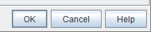
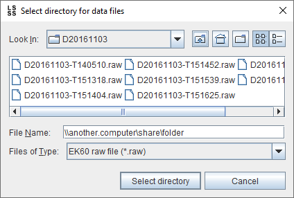

This section contains various tips and tricks.
Some user interface elements, like menus and buttons, can also be accessed by typing a mnemonic identified by an underlined character. For example, typing Alt + F will open the 'File' menu, and further typing Alt + P will trigger the 'Export to files...' menu item. In the following dialog, typing Alt + N will press the 'No' button:

Some dialogs contain a default button. It can be identified by its bold border. In the following screenshot, the 'OK' button is the default button.

Typing Enter (possibly twice if an input text box has focus) or Ctrl + Enter will trigger the default button.
In a file chooser dialog, it is possible to enter the path of a directory into the file name text field to browse that directory. This in particular be useful for a network directory that the file chooser dialog cannot browse to.

However, some file choosers are configured to select directories. In this case, entering the directory will select the directory rather than browsing it. Typing Ctrl + Enter will browse the directory.